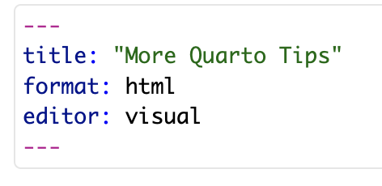
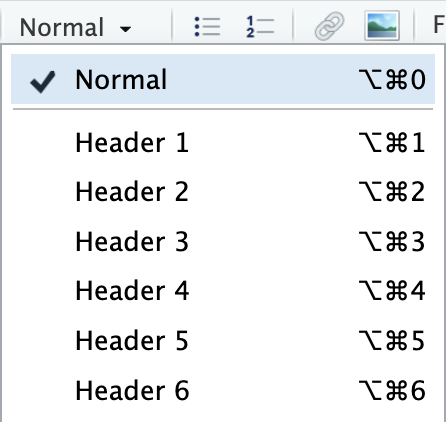
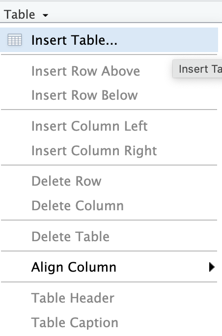

More Quarto Tips
For this assignment, please create a new Quarto document in RStudio and name it whatever you wish. Save it to your hard drive and make sure the dataset mcdonalds.csv is in the same folder as this document.
Quarto document structure
Header information
In each Quarto document, there is a YAML header section, denoted by the three --- dashed lines followed by some text, followed by another three --- dashed lines, that should look like the following:

This section should always be at the top of the document. This section controls the overall format of the document and generally you won’t need to modify it except to add your name or the date. However, the list of options that you can modify can be seen here and some examples here.
Add a table of contents to your document via the YAML header. Also add yourself as an author to the document via the header. Render the document to verify both changes work.
Setup code block
Just below the YAML header is usually a setup code block where you load any libraries you plan to use (like tidyverse) and any datasets you intend to analyze. This code will be run first when the document renders. You only need to load libraries once in the document, not in each code block.
Create a setup code block just below the YAML header. In this setup code block, load the
tidyverselibrary and load themcdonalds.csvdataset using theread.csv("mcdonalds")function. Render the document to make sure this works.
Headings
Choosing appropriate headings in your document are important to help organize your document and make it easier to read visually. You can select some text and set it to be Header 1 (the highest level header) and each increase in Header number (Header 2, 3, etc.) indicates a further subcategory, as shown from this menu:

For our brief investigation today, we are going to examine:
The variable sodium
The distribution of sodium
High sodium items
The comparing sodium and calories
Make a Header 1 that names this brief investigation and create appropriate Header 2 and Header 3 titles to match the structure of the investigation I have listed above. Render the document to check to make sure you can visually notice the changes.
Code block options
Labeling
At the start of each code block, you should label each code block. Note: you will get an error message if two code blocks share a label. Each code block should have a unique label. Code block options start with the following text: #|. An example label would be: #| label: question3-answer
Add a label to your setup code block and render to verify it works
Note that code blocks that produce a figure or table should have a special label. Figures should be labeled as #| label: fig-<name of the graph> and tables should be labeled with #| label: tbl-<name of the table>. This allows you to add captions and other control statements to the table or graph. An example of some of the things you can control:

Create a code block under the distribution of sodium section and make a histogram of sodium. Label the block appropriately and give the graph a caption using the
fig-capoption. Render your document to verify this has worked.
Choosing to show what will display
When you click the Render button a document will be generated that includes both content and the output of embedded code. If no options are selected, both the code you have written and the executed code will be displayed. In your rendered histogram of sodium, you should have already noticed this - your histogram code will display directly above the histogram.
To prevent the code from being displayed after you render a document, you can use the option #| echo: false.
Add
#| echo: falseto your sodium histogram code block and render the document. Verify that the code is now hidden.
However, you will probably notice that both the setup code block and the sodium histogram are printing a bunch of other text that are either informational or warnings about various things. These texts may help you debug when your code is not working but should not be displayed on any of your submitted homework documents. To suppress the printing of warning, you can instead specify #| warning: false. To prevent anything from the code block being printed, you can specify #| include: false. Note that this will prevent any results from the code from being printed also - this option is best used in the setup code block.
Add
#| warning: falseto the sodium histogram code block and#| include: falseto the setup code block. Render the document to verify that the nuisance text is no longer printing.
Making tables
Inserting a basic table
You can insert a table in the Visual editor mode using the following menu option:


Make a table using the Table insert command with two rows and two columns in the Comparing sodium and calories section of the document. Caption the table as
Summary comparison between sodium and calories
These tables are a good option for when you are making simple table with information of your own produced outside of RStudio or you want to include very simple calculations. The way you can add very simple calculations is with in-line code. Within a cell of the table, you can add some simple code by typing: `r 1+1`. You can replace 1+1 with things like mean(mtcars$mpg) (note: make sure you still have the `r part at the beginning) to perform more useful calculations.
In the table you have created, add code to calculate the mean of the two variables in the first row and the standard deviation of both variables in the second row. Render the document to verify it worked.
Making a table programmatically
For more complex tables, you will want to make the tables programmatically rather than by hand. The easiest and best way to do this is with the kable() function (documentation here). You can pass any data frame (the standard way a dataset is stored) to kable() to produce a good quality table. A simple example would be kable(mtcars). To use the kable() function you need to have the knitr library loaded.
Add the command to load the
knitrlibrary to your setup code block. Now filter your dataset to only show the highest sodium items and make a table usingkable()in the High sodium items section. Remember the special labels that table code blocks must have. Render the document to verify this worked.
kable() can be extended by using the kableExtra package (documentation here). Install the kableExtra package, load it in your setup code block. You can add on kableExtra() elements by doing <table name> %>% kable_styling().
Now use some aspects of
kableExtra()to make your table more pretty. Render the document to verify it works.
Additional investigations
If you’ve made it this far, good job! Keep working on your document by addingin additional sections and code blocks to investigate various properties of the mcdonalds dataset until the lab time finishes.